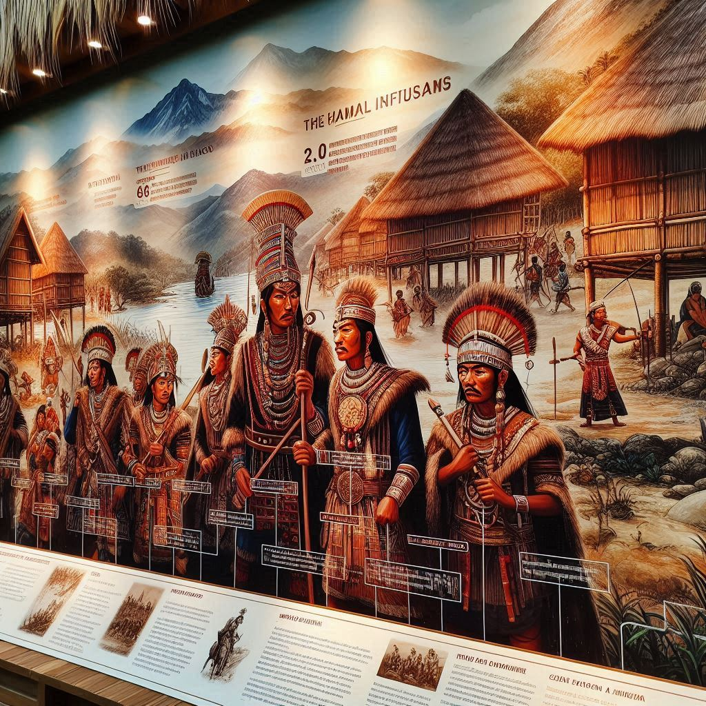

The history of Nagaland is rich and complex, shaped by its indigenous tribes, colonial influences, and its integration into the Indian nation. The state's history can be divided into several key phases, reflecting the evolution of its social, political, and cultural landscape.
Ancient and Pre-Colonial History
The history of Nagaland can be traced back to ancient times, but much of it remains obscure due to the absence of written records. The Naga people, the indigenous inhabitants of the region, are believed to have migrated from Southeast Asia and settled in the Naga Hills centuries ago.
Tribal Societies: Nagaland is home to around 16 major tribes, each with its own distinct language, culture, and traditions. These tribes lived in relative isolation, developing unique customs, social structures, and practices. The Nagaland tribes were primarily agrarian and hunter-gatherers, living in villages located on mountain slopes and in valleys.
Self-Governance: Naga societies were traditionally governed by village councils and tribal chiefs. The chiefs, called "Anghs" in some tribes, held significant authority, while the village councils were responsible for maintaining law and order. Tribal conflicts and warfare were common, as the Naga people engaged in territorial disputes with neighboring tribes.
Cultural and Religious Practices: Traditionally, Naga tribes practiced animism and worshipped a variety of deities related to nature, including spirits associated with the land, rivers, and forests. The people celebrated festivals related to agriculture, hunting, and seasonal changes. Headhunting was a prominent ritual practice, although it was outlawed in the 20th century.
British Colonial Era
The British colonial period marked a significant turning point in the history of Nagaland. The British East India Company and later the British Raj began to exert control over northeastern India in the 19th century, including Nagaland.
First Encounters with the British: The Naga tribes were resistant to British intrusion into their lands. In the early 19th century, the British established contact with the Naga tribes, but the indigenous people often resisted British efforts to assert control. The Naga Hills remained largely isolated from British rule due to the region's difficult terrain and the fierce resistance of the tribes.
British Annexation (1879): In 1879, the British officially annexed Nagaland, which was then part of the larger Assam region. The British established military posts in the region and began to assert more control over the tribes. However, the Naga people were largely left to their own devices, with the British focusing on establishing trade routes and overseeing tea plantations in the neighboring regions of Assam.
Christian Missionaries: During the late 19th century, British Christian missionaries began to influence the Naga tribes, particularly in the form of Christianity. Christian missionaries, mostly from the American Baptist and Church of England, were active in the region and played a significant role in changing Naga society. By the early 20th century, Christianity had become widespread among the Naga tribes, replacing traditional animistic beliefs.
Resistance to British Rule: The Naga people had a long history of resistance to British control. The most notable event was the Naga Resistance Movement in the early 20th century. However, British colonial rule did not completely break the spirit of the Naga people, and many continued to live largely independently, maintaining their tribal traditions.
Post-Independence and the Struggle for Naga Autonomy
After India gained independence in 1947, Nagaland's political future became increasingly uncertain, with deep divisions over whether the region should remain part of India or pursue its own path.
Formation of Nagaland: After India’s independence, the Naga people, led by the Naga National Council (NNC), demanded autonomy and self-determination. The NNC, under the leadership of Angami Zapu Phizo, called for a separate Naga nation. This demand led to intense political and military conflicts with the newly formed Indian government.
Nagaland’s Creation (1963): The Indian government, under the leadership of Prime Minister Jawaharlal Nehru, initially opposed the demand for a separate Naga state. However, after years of unrest and violent insurgency by the Naga nationalist movement, Nagaland was formally declared a state within India on December 1, 1963. This was done in an attempt to resolve the issue of Naga self-determination and pacify the insurgents.

Insurgency and the Naga Nationalist Movement
The Naga insurgency has been one of the longest-running insurgencies in India. After the creation of the state of Nagaland, the demand for Naga sovereignty continued under various factions. This led to the emergence of several insurgent groups, the most prominent being the Nationalist Socialist Council of Nagaland (NSCN).
NSCN and Split: The NSCN, which emerged in 1980, split into two factions in 1988 — NSCN-IM (Isak-Muivah) and NSCN-K (Khaplang). These factions continued to engage in violence and armed struggle, demanding either autonomy or outright independence for the Naga people.
Violence and Peace Efforts: Over the decades, the insurgency led to widespread violence, with clashes between Naga insurgents and Indian security forces. The Naga people endured many hardships, with large parts of the population displaced by conflict. Several rounds of peace talks between the Indian government and Naga leaders, especially under the Naga Peace Accord framework, have taken place, but the issue remains unresolved.
Recent Developments: In recent years, there have been some positive developments, such as the framework agreement between the Indian government and the NSCN-IM in 2015. The agreement laid the groundwork for a possible peace deal, although issues like territorial disputes and the question of Naga autonomy remain contentious.
Modern-Day Nagaland
Nagaland today is a state within the Indian Union, with Kohima as its capital and Dimapur as its largest city and commercial hub. The state continues to deal with the legacy of the insurgency and the pursuit of greater autonomy or independence by some groups.
Governance: Nagaland is governed by a Chief Minister and a Legislative Assembly. The state has witnessed significant political developments in recent decades, with increased focus on education, infrastructure, and economic development.
Social and Cultural Life: The state is known for its tribal festivals, particularly the Hornbill Festival, which is celebrated annually and showcases the rich cultural heritage of Nagaland's indigenous tribes. Christianity continues to be a major influence in the state, and Nagaland remains one of the most Christian-majority states in India.
Challenges: Despite its rich culture and history, Nagaland faces challenges related to economic development, unemployment, infrastructure, and the lingering issues of political autonomy and insurgency. The ongoing quest for peace and greater autonomy continues to shape the region's politics.
Conclusion
The history of Nagaland is one of resilience and struggle. From its ancient tribal societies to the colonial era and the post-independence insurgency, the Naga people have fought to preserve their identity, culture, and political rights. Although Nagaland is now a state in India, the legacy of the Naga nationalist movement and the quest for autonomy continue to influence the region’s political landscape. As the state moves forward, efforts toward peace, development, and cultural preservation remain central to its future.